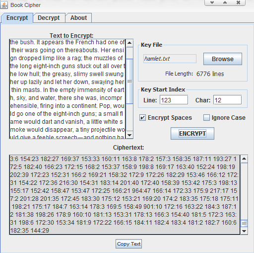

A character-by-character implementation of the book cipher algorithm,
a process that encodes a message by associating text with its
location in a predetermined key file, usually a book or other large text document.

The traditional book cipher encodes entire words by finding the same
word in a key book and noting its location. This slightly more
flexible version encodes individual characters by their line/character
index. An individual occurrence of a character in the key is
encoded no more than once. Large text files are the best keys
but the applet works with many other types of files too, so long as
the file contains sufficient character variety to duplicate the message.
Options
Key Index:
Use this index to specify a starting point in the key file for encoding.
The final ciphertext will not include any index references that
occur before this point in the file. This gets around the problem of
using a key file that may have similar opening text to many other
files, such as an HTML heading, email signature or publisher title page.
Encrypt Spaces:
Give the whitespace in the original message corresponding index
references in the ciphertext. Uncheckingthisoptionwillmakethedecodedtextlooklikethis,
and will also cut down on the size of the ciphertext.
Ignore Case:
Check this option to match characters regardless of case. Use
this to preserve the text when the message includes rarely used
capitals that might not be found in the key file. Some letter use
frequency information might be useful.